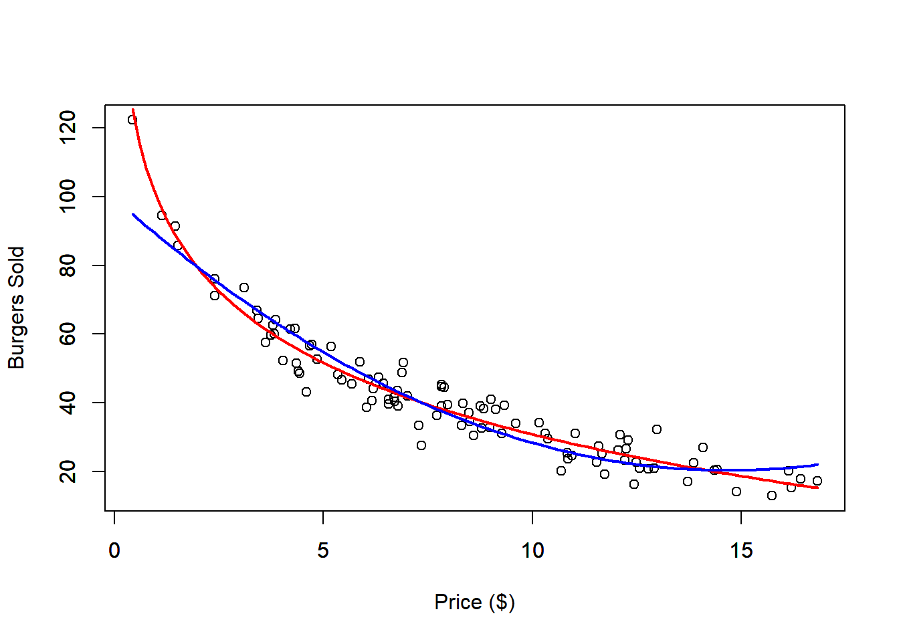
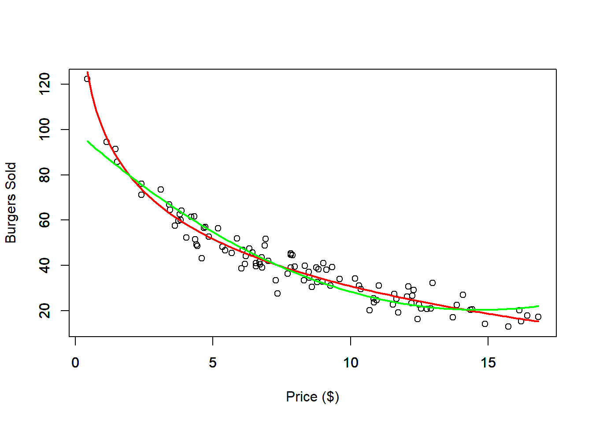
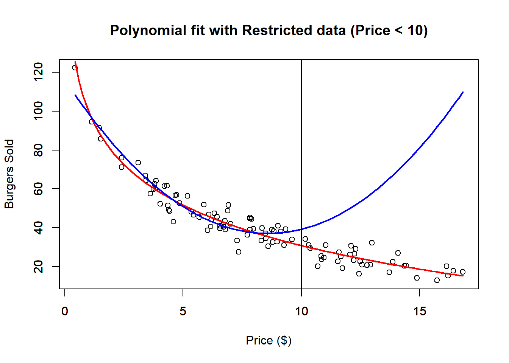

5 Polynomial Regression
Polynomial regression extends linear regression by allowing the relationship between the explanatory variable and the response to be nonlinear. Although the resulting fitted relationship is nonlinear in \(x\), the model remains linear in its coefficients.
A polynomial regression model of degree \(k\) has the form
\[ y = \beta_0 + \beta_1x + \beta_2x^2 + \cdots + \beta_kx^k + e, \]
where
- \(y\) is the response variable,
- \(x\) is the explanatory variable,
- \(\beta_0,\beta_1,\ldots,\beta_k\) are coefficients,
- \(e\) is the error term.
Thus, polynomial regression does not require a new estimation principle. It remains a least-squares problem, but with transformed versions of the original explanatory variable included as additional predictors.
5.1 Motivation
Polynomial regression is useful when the relationship between the response and explanatory variable displays curvature that cannot be represented adequately by a straight line.
There are two main motivations for considering a polynomial model:
- The underlying relationship may itself have a polynomial structure.
- A polynomial may provide a useful approximation to a more complicated nonlinear relationship over the region of interest.
The degree of the polynomial controls the flexibility of the fitted relationship. Higher-degree polynomials can represent more complicated shapes, but increasing the degree unnecessarily can produce unstable fits and poor predictions, particularly outside the observed range of the explanatory variable.
5.1.1 Taylor Polynomials and Polynomial Regression
One mathematical motivation for polynomial regression comes from Taylor approximation.
If a sufficiently smooth function \(f(x)\) is known, its Taylor polynomial of degree \(k\) around a point \(x_0\) is
\[ f(x) \approx f(x_0) + f'(x_0)(x-x_0) + \frac{f''(x_0)}{2!}(x-x_0)^2 + \cdots + \frac{f^{(k)}(x_0)}{k!}(x-x_0)^k. \]
This shows that a smooth nonlinear function can often be approximated by a polynomial over a sufficiently limited region.
However, a Taylor polynomial and a polynomial regression model are not the same object.
In a Taylor approximation, the coefficients are determined by derivatives of a known function at a particular expansion point \(x_0\). In polynomial regression, the underlying relationship is generally unknown, and the coefficients are instead estimated from observed data by minimizing a least-squares criterion.
Thus, Taylor polynomials motivate the use of polynomial functions as approximations to smooth nonlinear relationships, but polynomial regression does not require the fitted coefficients to correspond to derivatives at an expansion point.
In particular, polynomial regression is ordinarily fitted over the observed data as a whole. The choice of a point used to center the explanatory variable changes the parameterization of the polynomial, but it does not change the class of polynomial functions being fitted.
5.2 Polynomial Regression as a Linear Model
Although polynomial regression represents a nonlinear relationship between \(x\) and \(y\), it remains linear in the coefficients.
For a polynomial of degree \(k\), define
\[ \boldsymbol{\beta} = \begin{pmatrix} \beta_0\\ \beta_1\\ \vdots\\ \beta_k \end{pmatrix} \]
and
\[ \mathbf{X} = \begin{pmatrix} 1 & x_1 & x_1^2 & \cdots & x_1^k\\ 1 & x_2 & x_2^2 & \cdots & x_2^k\\ \vdots & \vdots & \vdots & & \vdots\\ 1 & x_n & x_n^2 & \cdots & x_n^k \end{pmatrix}. \]
Then the polynomial model can be written as
\[ \mathbf{y} = \mathbf{X}\boldsymbol{\beta} + \mathbf{e}. \]
Consequently, the least-squares problem is
\[ \min_{\boldsymbol{\beta}} \| \mathbf{y} - \mathbf{X}\boldsymbol{\beta} \|^2. \]
Therefore, polynomial regression uses exactly the same least-squares principle developed previously. The only difference is that the columns of the design matrix now contain powers of the same explanatory variable.
For example, a quadratic model
\[ y_i = \beta_0 + \beta_1x_i + \beta_2x_i^2 + e_i \]
uses the design matrix
\[ \mathbf{X} = \begin{pmatrix} 1 & x_1 & x_1^2\\ 1 & x_2 & x_2^2\\ \vdots & \vdots & \vdots\\ 1 & x_n & x_n^2 \end{pmatrix}. \]
The important distinction is therefore between being linear in the explanatory variable and being linear in the coefficients. Polynomial regression is nonlinear in \(x\), but linear in \(\boldsymbol{\beta}\).
5.3 Centering and Reparameterization
Polynomial models can be written using powers of \(x\) directly, or using powers of a centered explanatory variable.
Proposition 5.1 (Centering as a Reparameterization of Polynomial Regression) Let \(c\in\mathbb{R}\) be any fixed constant and define the centered explanatory variable
\[ x^c=x-c. \]
Then the class of polynomial functions of degree at most \(k\) generated by
\[ 1,x,x^2,\ldots,x^k \]
is the same as the class generated by
\[ 1,x^c,(x^c)^2,\ldots,(x^c)^k. \]
Proof
Proof. First, consider a polynomial of degree at most \(k\) written in terms of the original explanatory variable,
\[ p(x) = \sum_{j=0}^k\beta_jx^j. \]
Since
\[ x=x^c+c, \]
we can substitute \(x^c+c\) for \(x\). Then,
\[\begin{align*} p(x) &= \sum_{j=0}^k \beta_jx^j & \text{def. } p(x) \\ &= \sum_{j=0}^k \beta_j(x^c+c)^j & \text{sub. } x=x^c+c \\ &= \sum_{j=0}^k \beta_j \sum_{r=0}^j {j\choose r} (x^c)^r c^{j-r} & \text{binomial theorem} \\ &= \sum_{r=0}^k \left[ \sum_{j=r}^k \beta_j {j\choose r} c^{j-r} \right] (x^c)^r & \text{rearrange sums}. \end{align*}\]
Define
\[ \alpha_r = \sum_{j=r}^k \beta_j {j\choose r} c^{j-r}, \qquad r=0,\ldots,k. \]
Then,
\[ p(x) = \sum_{r=0}^k \alpha_r(x^c)^r. \]
Therefore, every polynomial of degree at most \(k\) written in terms of
\[ 1,x,x^2,\ldots,x^k \]
can also be written in terms of
\[ 1,x^c,(x^c)^2,\ldots,(x^c)^k. \]
Now we show the converse. Since
\[ x^c=x-c, \]
consider a polynomial written in terms of the centered explanatory variable,
\[ q(x^c) = \sum_{j=0}^k\alpha_j(x^c)^j. \]
Then,
\[\begin{align*} q(x^c) &= \sum_{j=0}^k\alpha_j(x^c)^j & \text{def. } q(x^c) \\ &= \sum_{j=0}^k\alpha_j(x-c)^j & \text{sub. } x^c=x-c \\ &= \sum_{j=0}^k \alpha_j \sum_{r=0}^j {j\choose r} x^r(-c)^{j-r} & \text{binomial theorem} \\ &= \sum_{r=0}^k \left[ \sum_{j=r}^k \alpha_j {j\choose r} (-c)^{j-r} \right] x^r & \text{rearrange sums}. \end{align*}\]
Define
\[ \beta_r = \sum_{j=r}^k \alpha_j {j\choose r} (-c)^{j-r}, \qquad r=0,\ldots,k. \]
Then,
\[ q(x^c) = \sum_{r=0}^k\beta_rx^r. \]
Therefore, every polynomial of degree at most \(k\) written in terms of the centered explanatory variable can also be written in terms of the original explanatory variable.
Hence,
\[ \operatorname{span} \left\{ 1,x,x^2,\ldots,x^k \right\} = \operatorname{span} \left\{ 1,x^c,(x^c)^2,\ldots,(x^c)^k \right\}. \]
Thus, centering does not change the class of polynomial functions. It only changes the coefficients used to represent a particular polynomial.
Now consider the observed explanatory values \(x_1,\ldots,x_n\). The uncentered polynomial design matrix is
\[ \mathbf{X} = \begin{pmatrix} 1 & x_1 & x_1^2 & \cdots & x_1^k\\ 1 & x_2 & x_2^2 & \cdots & x_2^k\\ \vdots & \vdots & \vdots & & \vdots\\ 1 & x_n & x_n^2 & \cdots & x_n^k \end{pmatrix}, \]
while the centered polynomial design matrix is
\[ \mathbf{X}_c = \begin{pmatrix} 1 & x_1^c & (x_1^c)^2 & \cdots & (x_1^c)^k\\ 1 & x_2^c & (x_2^c)^2 & \cdots & (x_2^c)^k\\ \vdots & \vdots & \vdots & & \vdots\\ 1 & x_n^c & (x_n^c)^2 & \cdots & (x_n^c)^k \end{pmatrix}. \]
From the identities established above, every column of \(\mathbf{X}\) is a linear combination of the columns of \(\mathbf{X}_c\). Therefore,
\[ \mathcal{C}(\mathbf{X}) \subseteq \mathcal{C}(\mathbf{X}_c). \]
Similarly, every column of \(\mathbf{X}_c\) is a linear combination of the columns of \(\mathbf{X}\). Therefore,
\[ \mathcal{C}(\mathbf{X}_c) \subseteq \mathcal{C}(\mathbf{X}). \]
Hence,
\[ \mathcal{C}(\mathbf{X}) = \mathcal{C}(\mathbf{X}_c). \]
Polynomial least squares using the original explanatory variable solves
\[ \min_{\boldsymbol{\beta}} \| \mathbf{y}-\mathbf{X}\boldsymbol{\beta} \|^2, \]
while polynomial least squares using the centered explanatory variable solves
\[ \min_{\boldsymbol{\alpha}} \| \mathbf{y}-\mathbf{X}_c\boldsymbol{\alpha} \|^2. \]
Since
\[ \mathcal{C}(\mathbf{X}) = \mathcal{C}(\mathbf{X}_c), \]
both optimization problems minimize the distance from \(\mathbf{y}\) to exactly the same subspace. Therefore, they have the same projection of \(\mathbf{y}\) and hence the same fitted values,
\[ \hat{\mathbf{y}} = \hat{\mathbf{y}}^c. \]
Thus, centering changes the numerical values and interpretation of the coefficients, but it does not change the polynomial function being fitted or the resulting fitted values.
Therefore, centering the explanatory variable changes the parameterization of a polynomial regression model, but does not change the class of polynomial functions being fitted.
Consequently, when the same observations and polynomial degree are used, polynomial regression based on \(x\) and polynomial regression based on \(x^c=x-c\) produce the same fitted values.
5.3.1 Why Center at the Sample Mean?
A particularly convenient choice is
\[ c=\bar{x}. \]
There are several reasons for using the sample mean as the center.
The center lies naturally within the observed explanatory values. The sample mean provides a convenient reference point representing the center of the observed \(x\) values. In fact, \(\bar{x}\) minimizes
\[ \sum_{i=1}^n(x_i-c)^2 \]
over all possible choices of \(c\).
This is an algebraic reason for using \(\bar{x}\) as a center; it should not be interpreted as saying that polynomial regression itself is a Taylor approximation around \(\bar{x}\).
Interpretability of the intercept. If
\[ x_i^c=x_i-\bar{x}, \]
then \(x_i^c=0\) corresponds to \(x_i=\bar{x}\). Therefore, the intercept of the centered polynomial represents the fitted response at the average observed value of the explanatory variable.
Potential improvement in numerical conditioning. Powers such as \(x\), \(x^2\), and \(x^3\) can be strongly correlated and can differ substantially in magnitude. Centering often reduces some of these dependencies and can improve the numerical conditioning of the design matrix.
However, this improvement is not guaranteed in every dataset. Centering does not eliminate all dependence among polynomial terms, nor does it make the polynomial basis orthogonal.
Simpler algebra. When the explanatory variable is centered at \(\bar{x}\),
\[ \sum_{i=1}^n(x_i-\bar{x})=0. \]
This can simplify calculations and separate the interpretation of the intercept from some of the higher-order polynomial terms. Importantly, this change in parameterization does not alter the fitted polynomial curve.
5.3.2 Examples
We use our Burger Data set to illustrate polynomial regression as an approximation to a nonlinear relationship. We first fit a second-degree polynomial to the complete dataset.
dat <- read.csv("Burger Data.csv")
# Polynomial Regression Fit
outRegPol <- lm(Burgers ~ Price + I(Price^2), data = dat)
# Data Limits
xmin <- min(dat$Price)
xmax <- max(dat$Price)
ymin <- min(dat$Burgers)
ymax <- max(dat$Burgers)
# Scatter plot
plot(x = dat$Price,
y = dat$Burgers,
ylim = c(ymin, ymax),
xlim = c(xmin, xmax),
xlab = "Price ($)",
ylab = "Burgers Sold")
par(new = TRUE)
# Plots real non-linear relationship
curve(expr = 100 - 30 * log(x),
from = xmin,
to = xmax,
ylim = c(ymin, ymax),
xlim = c(xmin, xmax),
xlab = "",
ylab = "",
col = 'red',
lwd = 2)
par(new = TRUE)
# Plots approximated polynomial relationship
curve(expr = outRegPol$coefficients[1] + outRegPol$coefficients[2] * x + outRegPol$coefficients[3] * x^2,
from = xmin,
to = xmax,
ylim = c(ymin, ymax),
xlim = c(xmin, xmax),
xlab = "",
ylab = "",
col = 'blue',
lwd = 2)
The second-degree polynomial provides a reasonable approximation to the nonlinear relationship over the observed range of prices. The red curve represents the nonlinear relationship
\[ 100-30\log(x), \]
while the blue curve represents the fitted quadratic polynomial.
The polynomial should be interpreted primarily over the region supported by the observed data. Because the quadratic model is only an approximation to the nonlinear relationship, extrapolating far beyond the observed range may produce behavior that does not resemble the relationship being approximated.
We can now compare the polynomial fit obtained with the original explanatory variable to the fit obtained after centering the explanatory variable at its sample mean.
dat <- read.csv("Burger Data.csv")
x <- dat$Price
y <- dat$Burgers
xbar <- mean(x)
xc <- x - xbar
xc2 <- xc^2
# Check Correlation
print(paste0("Non centered correlation: ", round(cor(x, x^2), 4)))## [1] "Non centered correlation: 0.971"## [1] "Centered correlation: 0.2083"# Polynomial Regression Fit
outRegPol <- lm(Burgers ~ Price + I(Price^2), data = dat)
# Polynomial Regression Centered Fit
outRegPolCen <- lm(y ~ xc + xc2)
# Data Limits
xmin <- min(dat$Price)
xmax <- max(dat$Price)
ymin <- min(dat$Burgers)
ymax <- max(dat$Burgers)
# Scatter plot
plot(x = dat$Price,
y = dat$Burgers,
ylim = c(ymin, ymax),
xlim = c(xmin, xmax),
xlab = "Price ($)",
ylab = "Burgers Sold")
par(new = TRUE)
# Plots real non-linear relationship
curve(expr = 100 - 30 * log(x),
from = xmin,
to = xmax,
ylim = c(ymin, ymax),
xlim = c(xmin, xmax),
xlab = "",
ylab = "",
col = 'red',
lwd = 2)
par(new = TRUE)
# Plots approximated polynomial relationship
curve(expr = outRegPol$coefficients[1] + outRegPol$coefficients[2] * x + outRegPol$coefficients[3] * x^2,
from = xmin,
to = xmax,
ylim = c(ymin, ymax),
xlim = c(xmin, xmax),
xlab = "",
ylab = "",
col = 'blue',
lwd = 2)
par(new = TRUE)
# Plots approximated polynomial centered relationship
curve(expr = outRegPolCen$coefficients[1] + outRegPolCen$coefficients[2] * (x - xbar) + outRegPolCen$coefficients[3] * (x - xbar)^2,
from = xmin,
to = xmax,
ylim = c(ymin, ymax),
xlim = c(xmin, xmax),
xlab = "",
ylab = "",
col = 'green',
lwd = 2)
The reported correlations illustrate that centering can change the relationships among the polynomial terms in the design matrix.
However, the blue and green fitted curves should theoretically coincide. Both fits use the same observations and the same quadratic function space. Centering changes the coefficients used to represent the polynomial, but it does not change the fitted values.
Thus, any visible difference between the blue and green curves should be attributable only to numerical computation or graphical precision, not to a difference between the underlying fitted models.
This illustrates an important distinction:
\[ \text{different coefficients} \qquad\not\Rightarrow\qquad \text{different fitted polynomial}. \]
Finally, consider what happens when the quadratic model is estimated using only observations for which the price is below \(10\).
dat <- read.csv("Burger Data.csv")
# Select only Prices bellow 10 dollars
sel <- dat$Price < 10
datRes <- dat[sel, ]
# Polynomial Regression Fit
outRegPolRes <- lm(Burgers ~ Price + I(Price^2), data = datRes)
# Data Limits
xmin <- min(dat$Price)
xmax <- max(dat$Price)
ymin <- min(dat$Burgers)
ymax <- max(dat$Burgers)
# Scatter plot
plot(x = dat$Price,
y = dat$Burgers,
ylim = c(ymin, ymax),
xlim = c(xmin, xmax),
xlab = "Price ($)",
ylab = "Burgers Sold",
main = "Polynomial fit with Restricted data (Price < 10)")
par(new = TRUE)
# Plots real non-linear relationship
curve(expr = 100 - 30 * log(x),
from = xmin,
to = xmax,
ylim = c(ymin, ymax),
xlim = c(xmin, xmax),
xlab = "",
ylab = "",
col = 'red',
lwd = 2)
par(new = TRUE)
# Plots approximated polynomial relationship
curve(expr = outRegPolRes$coefficients[1] + outRegPolRes$coefficients[2] * x + outRegPolRes$coefficients[3] * x^2,
from = xmin,
to = xmax,
ylim = c(ymin, ymax),
xlim = c(xmin, xmax),
xlab = "",
ylab = "",
col = 'blue',
lwd = 2)
abline(v = 10, lwd = 2)
In this case, only observations with prices below \(10\) are used to estimate the polynomial coefficients, although the fitted polynomial is displayed over the complete price range.
The model may fit the restricted training data very well while providing poor predictions outside that range. This does not mean that the polynomial fit is poor where it was estimated. Rather, it demonstrates the distinction between interpolation within the region of the observed explanatory values and extrapolation beyond that region.
We can check the \(R^2\) of the restricted fit.
##
## Call:
## lm(formula = Burgers ~ Price + I(Price^2), data = datRes)
##
## Residuals:
## Min 1Q Median 3Q Max
## -11.0809 -3.5462 -0.0635 3.0957 13.8374
##
## Coefficients:
## Estimate Std. Error t value Pr(>|t|)
## (Intercept) 116.0882 3.2929 35.254 < 2e-16 ***
## Price -18.3910 1.2519 -14.691 < 2e-16 ***
## I(Price^2) 1.0709 0.1105 9.695 4.13e-14 ***
## ---
## Signif. codes: 0 '***' 0.001 '**' 0.01 '*' 0.05 '.' 0.1 ' ' 1
##
## Residual standard error: 5.062 on 63 degrees of freedom
## Multiple R-squared: 0.9131, Adjusted R-squared: 0.9104
## F-statistic: 331.2 on 2 and 63 DF, p-value: < 2.2e-16The \(R^2\) for the restricted data can be quite high because it measures how well the quadratic model fits the observations used to estimate it. Nevertheless, the graph shows that the fitted polynomial can depart substantially from the nonlinear relationship once it is extrapolated beyond the restricted price range.
Thus, a strong in-sample fit does not by itself guarantee reliable predictions outside the region represented by the observed explanatory variable.
Polynomial regression is a special case of multiple linear regression. Although there is only one original explanatory variable, the transformations
\[ x,\;x^2,\;\ldots,\;x^k \]
appear as separate columns of the design matrix.
This makes polynomial regression a natural bridge between simple and multiple linear regression. The model retains the visualization advantages of a single original explanatory variable while introducing the algebraic structure of a regression model with several predictors.
5.4 Exercises
The following exercises reinforce the interpretation of polynomial regression as a linear least-squares problem, the relationship between centered and uncentered polynomial representations, and the distinction between interpolation and extrapolation. Some exercises focus on mathematical derivations, while others use R to investigate the properties developed in this section.
5.4.1 Exercise 1 — Linear in the Coefficients
Consider the model
\[ y = \beta_0 + \beta_1x + \beta_2x^2 + \beta_3x^3 + e. \]
- Explain why this model is nonlinear as a function of \(x\).
- Explain why it is nevertheless a linear regression model.
- Identify the explanatory variables that appear in the corresponding linear model.
- Write the model in the form
\[ y = \beta_0 + \beta_1z_1 + \beta_2z_2 + \beta_3z_3 + e, \]
by defining appropriate values of \(z_1,z_2,z_3\).
5.4.2 Exercise 2 — Constructing the Polynomial Design Matrix
Suppose the observed explanatory values are
\[ x_1=-2, \qquad x_2=-1, \qquad x_3=0, \qquad x_4=2. \]
A cubic polynomial model is fitted to these observations.
- Construct the design matrix \(\mathbf{X}\).
- Write the coefficient vector \(\boldsymbol{\beta}\).
- Write the model in matrix form
\[ \mathbf{y} = \mathbf{X}\boldsymbol{\beta} + \mathbf{e}. \]
- Write the least-squares optimization problem using the Euclidean norm.
5.4.3 Exercise 3 — Quadratic Least Squares
Consider the observations
\[ \begin{array}{c|cccc} x_i & -1 & 0 & 1 & 2\\ \hline y_i & 3 & 1 & 2 & 6 \end{array} \]
and the quadratic model
\[ y_i = \beta_0+\beta_1x_i+\beta_2x_i^2+e_i. \]
- Construct the design matrix \(\mathbf{X}\).
- Compute \(\mathbf{X}'\mathbf{X}\).
- Compute \(\mathbf{X}'\mathbf{y}\).
- Write the normal equations.
- Solve for \(\hat{\boldsymbol{\beta}}\).
- Compute the fitted values \(\hat{\mathbf{y}}\).
- Compute the residual vector \(\hat{\mathbf{e}}\).
5.4.4 Exercise 4 — From a Centered Quadratic to an Uncentered Quadratic
Consider the centered quadratic polynomial
\[ p(x) = \alpha_0 + \alpha_1(x-c) + \alpha_2(x-c)^2. \]
- Expand the polynomial as a function of \(x\).
- Show that it can be written as
\[ p(x) = \beta_0+\beta_1x+\beta_2x^2. \]
- Express \(\beta_0,\beta_1,\beta_2\) in terms of \(\alpha_0,\alpha_1,\alpha_2\), and \(c\).
- Explain why this shows that centering does not create a different class of quadratic functions.
5.4.5 Exercise 5 — From an Uncentered Quadratic to a Centered Quadratic
Consider
\[ p(x) = \beta_0+\beta_1x+\beta_2x^2 \]
and let
\[ x^c=x-c. \]
Show that
\[ p(x) = \alpha_0+\alpha_1x^c+\alpha_2(x^c)^2, \]
where
\[ \alpha_0 = \beta_0+c\beta_1+c^2\beta_2, \]
\[ \alpha_1 = \beta_1+2c\beta_2, \]
and
\[ \alpha_2 = \beta_2. \]
Use your result to explain which coefficient remains unchanged when a quadratic polynomial is centered.
5.4.6 Exercise 6 — Numerical Reparameterization
Suppose
\[ p(x) = 5-3x+2x^2. \]
Center the explanatory variable at \(c=4\), so that
\[ x^c=x-4. \]
- Rewrite \(p(x)\) in terms of \(x^c\).
- Find \(\alpha_0,\alpha_1,\alpha_2\) such that
\[ p(x) = \alpha_0+\alpha_1x^c+\alpha_2(x^c)^2. \]
- Evaluate both representations at \(x=2\), \(x=4\), and \(x=6\).
- Verify that both parameterizations give the same values.
- Interpret \(\alpha_0\).
5.4.7 Exercise 7 — Column Spaces and Centering
Consider a quadratic polynomial regression.
The uncentered design matrix contains the columns
\[ \mathbf{1}, \qquad \mathbf{x}, \qquad \mathbf{x}^2, \]
while the design matrix centered at \(c\) contains
\[ \mathbf{1}, \qquad \mathbf{x}-c\mathbf{1}, \qquad (\mathbf{x}-c\mathbf{1})^2. \]
- Show that \(\mathbf{x}-c\mathbf{1}\) belongs to
\[ \mathcal{C}(\mathbf{X}). \]
- Show that
\[ (\mathbf{x}-c\mathbf{1})^2 = \mathbf{x}^2 - 2c\mathbf{x} + c^2\mathbf{1}. \]
- Conclude that every column of the centered design matrix belongs to the column space of the uncentered design matrix.
- Reverse the argument and conclude that the two design matrices have the same column space.
- Explain why the two least-squares fits must therefore have the same fitted values.
5.4.8 Exercise 8 — Why Center at the Mean?
Let
\[ g(c) = \sum_{i=1}^n(x_i-c)^2. \]
- Differentiate \(g(c)\) with respect to \(c\).
- Find its critical point.
- Compute the second derivative.
- Show that
\[ c=\bar{x} \]
is the unique minimizer of \(g(c)\). 5. Explain what this result says about the use of \(\bar{x}\) as a centering value. 6. Explain why this result does not imply that polynomial regression is a Taylor expansion around \(\bar{x}\).
5.4.9 Exercise 9 — Interpretation of the Centered Intercept
Consider the quadratic model centered at \(\bar{x}\),
\[ \hat{y} = \hat{\alpha}_0 + \hat{\alpha}_1(x-\bar{x}) + \hat{\alpha}_2(x-\bar{x})^2. \]
- Evaluate the fitted polynomial at \(x=\bar{x}\).
- Interpret \(\hat{\alpha}_0\).
- Compare this interpretation with the intercept \(\hat{\beta}_0\) in
\[ \hat{y} = \hat{\beta}_0 + \hat{\beta}_1x + \hat{\beta}_2x^2. \]
- Under what condition would \(\hat{\beta}_0\) have a useful interpretation in terms of an observed value of the explanatory variable?
5.4.10 Exercise 10 — Taylor Approximation versus Polynomial Regression
Suppose the underlying relationship is
\[ f(x)=\log(x). \]
- Write the second-degree Taylor polynomial of \(f(x)\) around \(x_0=1\).
- Explain how the coefficients of this polynomial are determined.
- Suppose instead that observations \((x_i,y_i)\) are available and the model
\[ y_i = \beta_0+\beta_1x_i+\beta_2x_i^2+e_i \]
is fitted by least squares. Explain how \(\beta_0,\beta_1,\beta_2\) are determined. 4. Explain two mathematical differences between the Taylor polynomial and the fitted polynomial regression. 5. Explain why Taylor approximation nevertheless provides motivation for using polynomial functions to approximate smooth relationships.
5.4.11 Exercise 11 — Centering in R
Using the Burger Data.csv data from this section, write R code to perform the following operations.
- Define
and compute \(\bar{x}\). 2. Construct
and
- Fit the two models
and
- Compare the estimated coefficients from the two models.
- Compare their fitted values using
- Explain why the coefficients differ even though the fitted values should agree up to numerical precision.
5.4.12 Exercise 12 — Correlation Between Polynomial Terms
Using the Burger Data.csv data, write R code to calculate
\[ \operatorname{cor}(x,x^2) \]
and
\[ \operatorname{cor}(x-\bar{x},(x-\bar{x})^2). \]
Then:
- Compare the two correlations.
- Determine whether centering reduced the correlation for this dataset.
- Explain why one example where the correlation decreases does not prove that centering will always eliminate dependence among polynomial terms.
- Explain why centered polynomial terms are not necessarily orthogonal.
5.4.13 Exercise 13 — Interpolation and Extrapolation
Using Burger Data.csv, fit a quadratic polynomial using only observations satisfying
\[ \text{Price}<10. \]
- Write R code to select the restricted observations.
- Fit the quadratic model to the restricted dataset.
- Plot the fitted polynomial over the complete observed price range.
- Add a vertical line at \(x=10\).
- Identify which part of the plotted polynomial represents interpolation and which part represents extrapolation.
- Obtain the \(R^2\) of the restricted model.
- Explain how the model can have a high \(R^2\) while producing poor predictions for prices larger than \(10\).
- Explain why \(R^2\) calculated from the training observations cannot by itself evaluate extrapolation performance.
5.4.14 Exercise 14 — Polynomial Degree and Model Flexibility
Using Burger Data.csv, fit polynomial regression models of degrees
\[ 1,\;2,\;3,\;4. \]
For example, the cubic model can be fitted using
- Fit all four models.
- Plot the fitted curves over the observed range of
Price. - Compare how the flexibility of the fitted function changes as the degree increases.
- Extend the curves slightly beyond the observed range.
- Compare the behavior of the four models during extrapolation.
- Based only on the material developed in this chapter, explain why increasing polynomial degree should not automatically be interpreted as producing a better predictive model.
- Explain how this exercise illustrates the distinction between fitting the observed data and predicting outside the observed region.